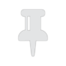

Nachdem Sie einen Clip ausgewählt haben, können Sie den Start des Clips an einem bestimmten Zeitpunkt der Zeitleister anheften, indem Sie auf  tippen. (Clips, die nicht angeheftet wurden, verschieben sich auf der Zeitleiste, wenn Sie weitere Bilder und Videos hinzufügen.)